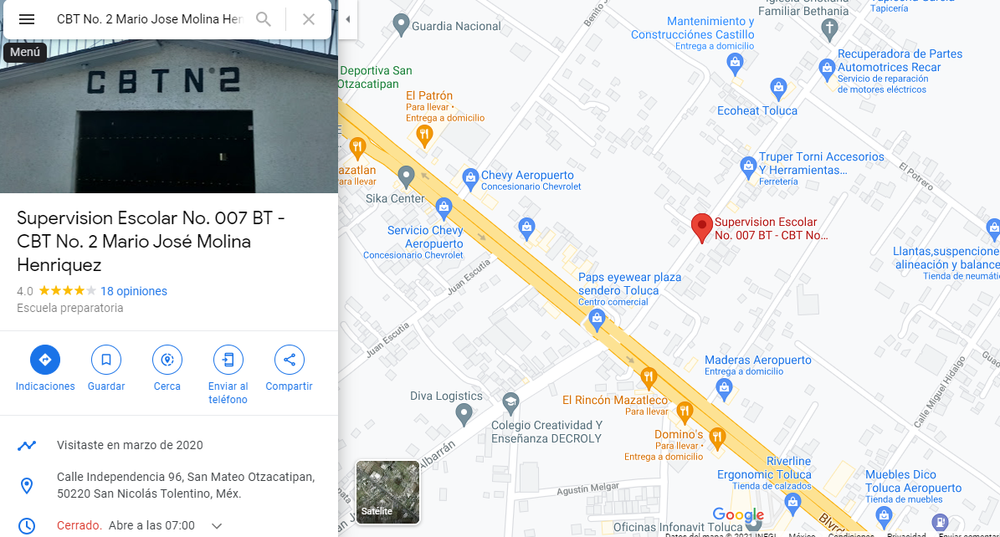

| CbtNo.2 Dr.Mario Jose Molina Henriquez | 
|
|---|
MisionAspiamos a ser una institución comprometida con la sociedad en la que se proporcione a los alumnos una visión integral, humanista, científica y tecnológica, con una visión crítica y comprometida, para formar personas competentes, que tengan la capacidad de desarrollarse con calidad en el ámbito profesional y empresarial. |
VisionFormar personas competentes con habilidades, destrezas, conocimientos interdisciplinarios y valores que les permitan enfrentar con éxito, los retos del mundo globalizado. |
ObjetivosPropiciar en los estudiantes los elementos, teóricos, metodológicos y axiológicos, que potencien el desarrollo de las competencias genéricas establecidas en el perfil de egreso, para acceder a otros estudios y/o incorporarse al sector productivo. |
Ubicacion |
Fotos de interes
|
|---|

carrerasQuimicoEl egresado deberá poseer los conocimientos teórico-prácticos en las ramas de la Química: inorgánica, orgánica, analítica, fisicoquímica, bioquímica y ambiental a fin de desarrollar eficientemente actividades de planeación, desarrollo, optimización, operación y dirección de los diferentes procesos químicos dentro del sector industrial. Su formación le brinda los conocimientos, habilidades, aptitudes y actitudes para enfrentar con éxito retos que implica la innovación y desarrollo de los procesos biotecnológicos, el monitoreo, inspección y vigilancia de contaminantes en el medio ambiente, el desarrollo de nuevos materiales, como fibras, colorantes y cerámicos avanzados, y en alternativas energéticas InformaticaEl técnico en informática es un especialista que apoya a nivel operativo el desarrollo de tecnologías de información para optimizar los recursos informáticos y contribuye en el mejor desempeño de las empresas. Quimico IndustrialLa química industrial es la rama de la química que aplica los conocimientos químicos a la producción de forma económica de materiales y productos químicos especiales con el mínimo impacto adverso sobre el medio ambiente. |
Modalidad Educativa Con fundamento en la Ley General de Educación se reconoce la Modalidad Escolarizada en la Educación Media Superior en el Estado de México. Esta modalidad recupera a la escuela como fuente inagotable del conocimiento, donde el plan y programas de estudio, alumnos, docentes, autoridad educativa y sociedad serán los protagonistas del hecho educativo en el entorno de la reforma integral de la educación media superior. La Secretaria de Educación expide los certificados de estudio correspondientes al Plan de Estudios del Modelo Educativo de Transformación Académica con la denominación de BACHILLERATO TECNOLOGICO DE LAS CARRERAS DE TECNICO EN INFORMATICA, TECNICO QUIMICO INDUSTRIAL Y TECNICO LABORATORISTA QUIMICO y fundamento al artículo 60 de la ley general de educación. La estructura reticular del bachillerato tecnológico se integra de 43 materias y 5 módulos. Comprende una carga horaria de 39 horas/semana/mes en promedio por semestre. Los alumnos laboran un promedio un total de 8 horas diarias. Cuentan con un semestre común a todas las carreras técnicas y a partir del segundo semestre inician la forma tecnológica especializada, en correspondencia con los sitios de inserción significativo en el ámbito laboral de la región. |
 |
|---|
Twitter: @Cbt2DrMarioJose
Teléfono: 722-132-70-35
Correo electrónico: cbt2tol@hotmail.com